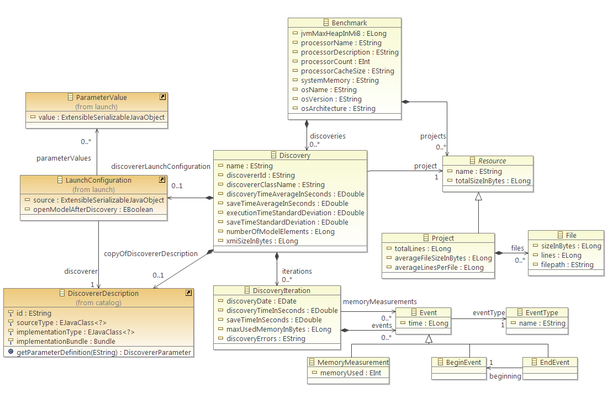
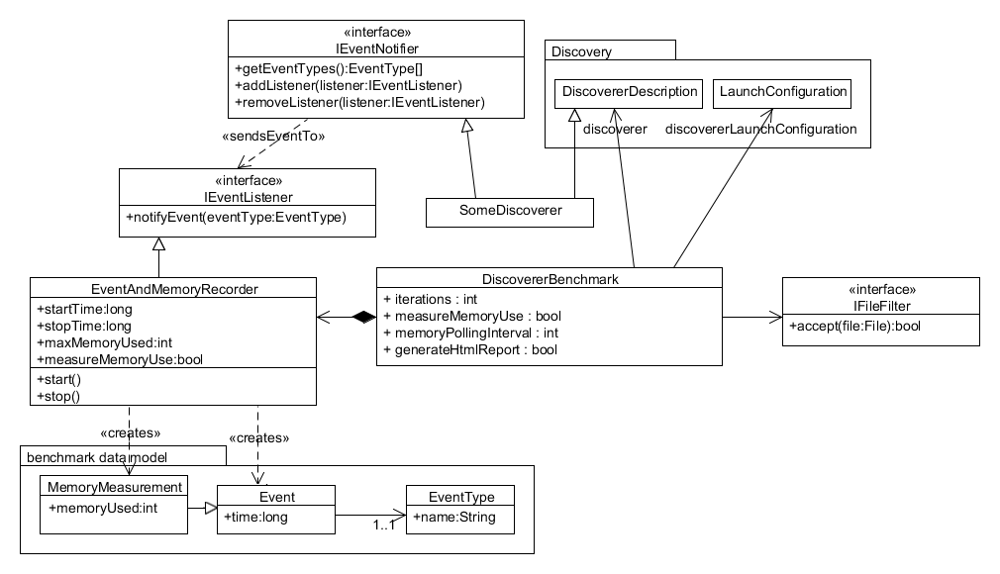
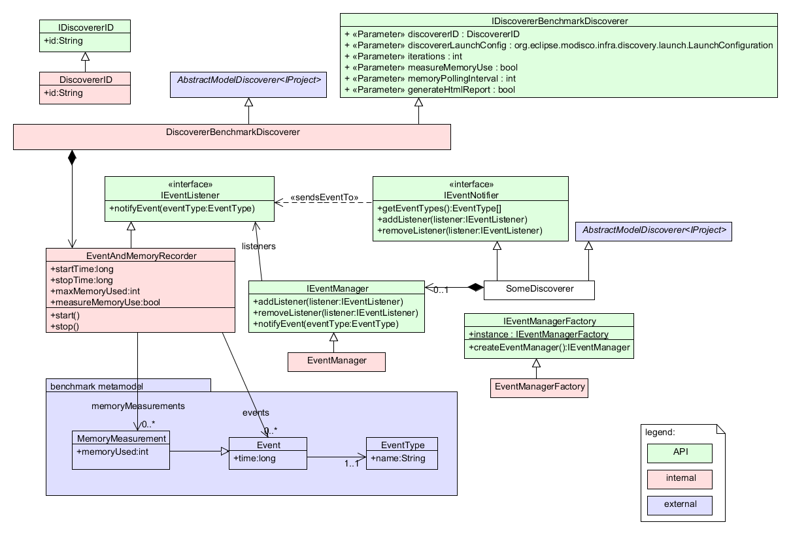
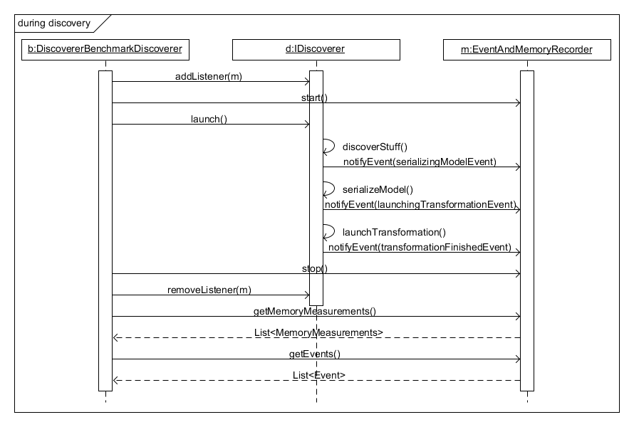
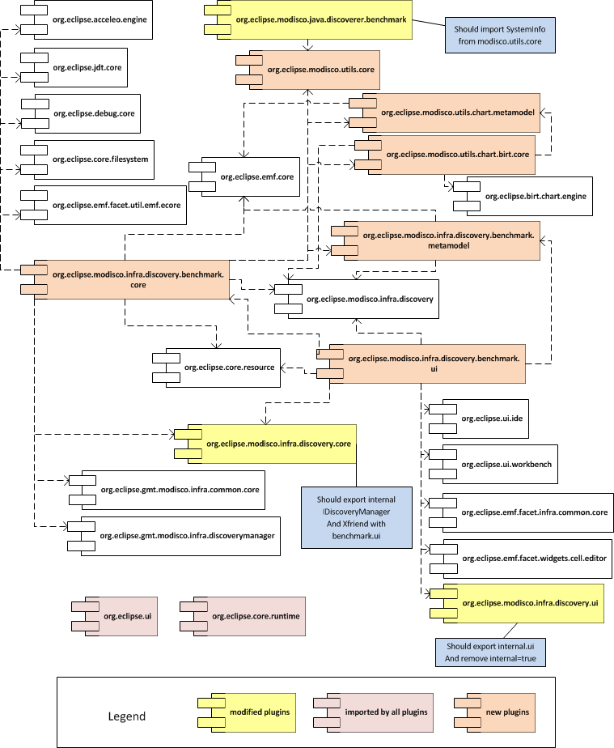
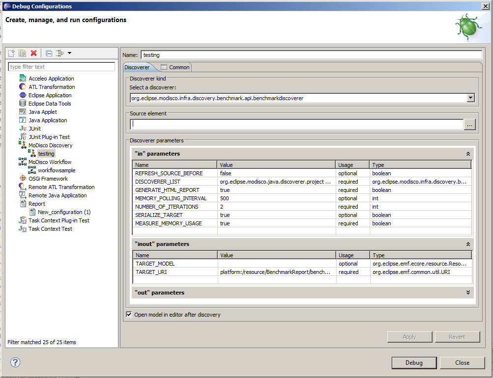
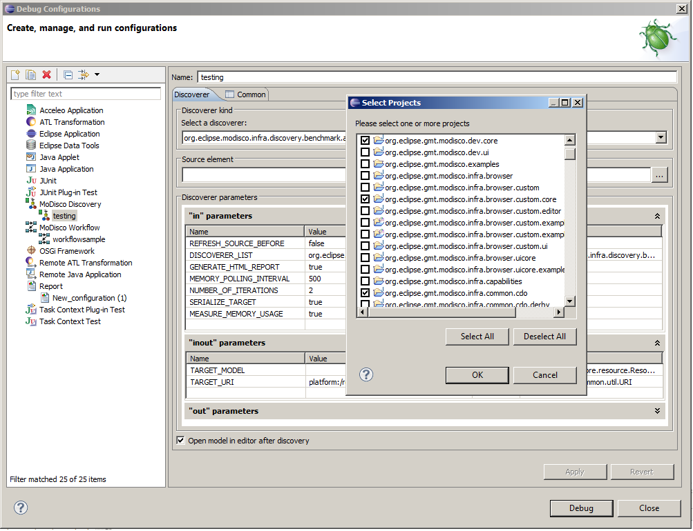
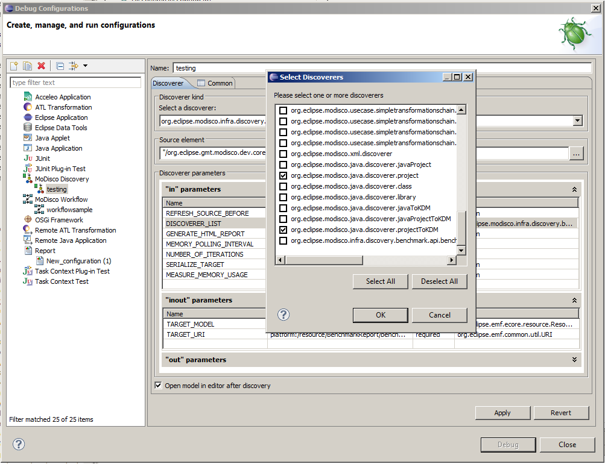
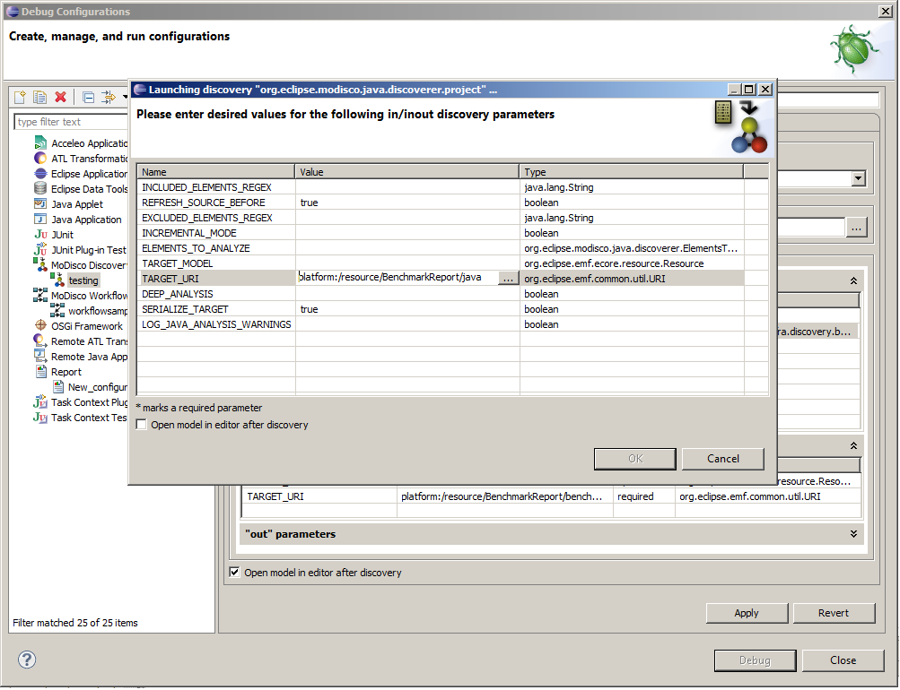
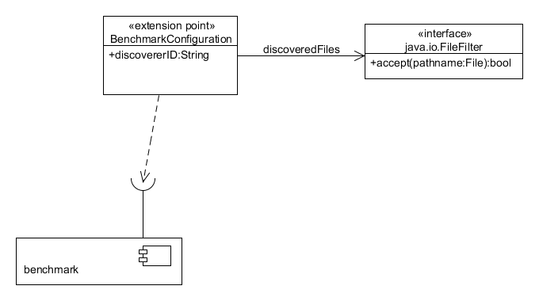

The benchmarking will take place on a PC with random unaccountable activity from the OS or other programs. So, in order to obtain the most reliable result, we need to do several measurements.
=> The user can choose how many times to run each discovery
We want to know which parts of the discovery take the most time or memory. So, we need a way to see what the benchmark is doing at any time. For this, we choose to emit events (analyzing file x, discovering package y, saving file z, etc.).
=> The benchmark must be able to record discoverer events happening while it is running

A benchmark consists of one or more discoveries launched on one or more projects. Each unique discovery is launched on a single project. The same discovery can be executed several times, so that averages and standard deviations can be computed. Some data is associated with each benchmark : the memory settings of the JVM, the hardware configuration on which the benchmark was run, and the operating system that was used.
Each project has a name (the name of the Eclipse project), and a list of the files it contains that were actually discovered. For each file, we memorize its filepath, its size in bytes, and the number of lines it contains. And the project computes the sum of the number of lines from all the files it contains, the average file size, the average number of lines per file, and the sum of the number of bytes of each contained file.
A discovery has the following information in the metamodel :
And each discovery iteration has:
Each discovery iteration can contain a list of memory measurements and of events that happened during the discovery and save. Each memory measurement has a timestamp and a measure of how much memory (in MiB) was in use at that time. An event has a timestamp, and each event can be either a standard event or an event marking the beginning or the end of some action. Each end event must be linked to a beginning event, so that we can measure a time span for an action. Each event has a type, with a name that determines what this event represents, and a boolean indicating whether the event occurred during the saving part of the discovery.

A discoverer benchmark references the discoverer it must launch and the launch configuration for this discoverer (containing the discovery parameters), the number of iterations it must be run, whether to generate the HTML report at the end of the benchmark, whether to measure memory use, and the memory polling interval if applicable. It also has a file filter, that determines which files constitute the input of the discovery, in order to get benchmark metrics that correspond to what was really analyzed.
The benchmark has an event and memory recorder, on which measurements can be started and stopped, with or without memory measurements. It memorizes the start and stop times, the maximum memory used, the individual memory measurements (each measurement consisting of the amount of memory allocated at a given time), and a list of events that happened during the benchmark. Each event has a time and a type. The event types are returned by the discoverer through the IEventNotifier interface, which it also uses to accept listeners (i.e. : the event and memory recorder) that will record the events.
The benchmark has the following requirements :
A benchmark is supposed to be able to be left unattended, for example during the night or over the course of several days. So, it means the user shouldn't have to regularly come back and select another project to launch it on.
=> The user has to be able to run a benchmark on several projects in a row
It also means the benchmark should not crash :
=> Errors should be logged and must not cause the benchmark to abort
And even in case it does crash or must be terminated for some other reason, we would still like to get partial results :
=> Intermediate results should be saved
We would like to get usable results as fast as possible, and avoid running out of memory at the beginning of the discovery :
=> The benchmark should order the projects it runs the discoverer on from smallest to biggest
Due to the nature of the JVM the memory use varies greatly, in a roller-coaster fashion : it goes up when objects are allocated, and when it reaches a certain threshold, the garbage collector (GC) kicks in and brings the memory use back down again. So, the memory measurements must be taken immediately after the GC has run, in order to know the "real" memory use. And since we want to be able to have regular measurements, we have to run the GC ourselves. This has the drawback that the performance suffers a lot from manually running the GC often. So, we cannot have an accurate measure of the duration of the discovery while simultaneously measuring memory use : we must choose between accurate time measurements and accurate memory measurements.
=> The user can choose whether to measure memory use during the discovery
With discoveries of big projects using a lot of memory, the GC can take a few seconds to do a single pass. So, running it every few milliseconds could multiply the overall time by a factor of 100 or more. So, we have to choose between regular measurements, and a benchmark that terminates in a reasonable amount of time.
=> The user can choose how often the memory measurements are taken
The data beans are implemented with EMF (there is a data model).
We choose to implement the benchmark as a discoverer, first because it makes sense since the benchmark creates a benchmark model as a result. And because it provides several facilities that are useful for the benchmark :
The benchmark can only be run on a discoverer that takes an Eclipse project as input (i.e : a class that extends AbstractModelDiscoverer<IProject>).
We want to generate diagrams for showing the time and memory behaviors. We will use Birt for this, since it is the only Eclipse project that is capable of doing this.
In case the benchmark crashes or must be terminated for some other reason, we would still like to get partial results. To ensure this, we catch all exceptions happening during a discovery (even potential OutOfMemoryError's), and save the results and generate the report in all cases.

The benchmark is defined as a discoverer, with several parameters to control the benchmarking process :
The EventAndMemoryRecorder class is used to measure the memory use during a discovery, by the means of a Job that runs in the background, and regularly ("memoryPollingInterval") calls the garbage collector and then immediately measures the memory used.
The discoverer can implement IEventNotifier, so that it may notify events during the discovery (for showing steps, or more generally "things" that happen during the discovery) by calling notifyEvent(Event) on the IEventListener it received through the interface IEventNotifier.
The discoverer can implement the listener mechanism, or delegate to the IEventManager which can be created through IEventManagerFactory.
In any case, the events should be dispatched to all listeners, the EventAndMemoryRecorder always being one such listener.

At the beginning of the benchmark, before starting the discoverer, the benchmark hooks up the event and memory recorder so that it listens to the discoverer events and starts the memory measurements.
The benchmark then launches the discoverer.
The discoverer starts doing its work. During this process, it may call notifyEvent(Event) on its listeners (the EventAndMemoryRecorder) before and/or after each major step it performs.
At the end of the benchmark — once the discoverer is finished — the benchmark removes the listener, stops the memory measurements, and retrieves the events and memory measurements.
The benchmarking tool is implemented in six main plug-ins. The global plug-in architecture is shown on the next figure.

The benchmark can be launched either by clicking through the Eclipse UI, or headlessly from the command line.
To start the benchmark from the UI using the Eclipse launch configuration system:




When run in headless (command line) mode (for example on a CI server such as Hudson), we pass the name of a launch configuration containing the parameters for the benchmark. This is done this way in order to avoid having to pass many parameters on the command line. Thus, a workspace should exist before launching the benchmark, and it should contain a benchmark launch configuration. We use Buckminster to materialize this workspace containing all the projects to benchmark, and the project containing the benchmark launch configuration.

In order to get metrics relevant to the benchmark, a "benchmark configuration" extension point is provided. It allows specifying which files among all the files contained in the project are really worked on by the discoverer. If no extension is provided for a discoverer, the discoverer can still be benchmarked, but the metrics will be imprecise.